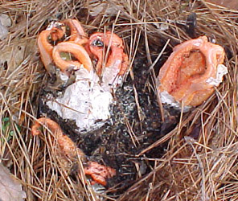

Previous || Next || Return to Mystery Plants || USC Herbarium
This Week's Mystery Plant | Dr. John B. Nelson Curator, USC Herbarium |
|
This week's Mystery Plant may be a mystery, but it is actually not a plant. It is, in fact, a fungus. The fungi are a huge group of organisms that differ significantly from "plants", as considered by modern biologists. Plants and fungi have superficial similarities, but probably more important differences. This speaks to an early concept amongst biologists, common well into the 18th Century, in which there were basically two groups of organisms, plants and animals. Further observations and research, since then, have distinguished additional groups of organisms, and a modern biological concept presently is that there are five groups, or "kingdoms" of living organisms. The fungi, in fact, are in some ways more closely related to animals than to plants. Our "Mystery Fungus", which is related to puffballs and mushrooms, is a member of a bizarre group called the "stinkhorns," which feature shapes that tend to be, shall we say, somewhat provocative. Our fascinating fungus grows rapidly from a whitish, egg-shaped structure that may appear on the surface of the ground, or just below whatever leaf litter may be there, or from mulch. It can show up just about anywhere in the South. A large, soft, reddish structure is produced, which in this case, is somewhat lattice-like, or divided into columnar arms, or perhaps looking like lobster claws. The arms start out bright, creamy orange or red, and they produce a mass of slimy spore-producing material on their inner surfaces. These fungi, when fully developed, are extremely putrid. The stinkiness associated with the fungus attracts flies, which probably think they have found a nice dead animal on which to feed; the flies spread the fungal spores. If one of these fungi appears in your yard or garden, you should consider it a special treat from Mother Nature, as it makes a great conversation piece. The fungus doesn't last very long, only a couple of days or so, and then disappears. Unless you really good at identifying wild fungi, it is rather risky to eat them, but this one is so stinky, that it is unlikely to be tasty. On the other hand, who knows? |
 Photo by Brad Johnston |